Clase 1
LIKE:Busca un patron especifico en una cadena
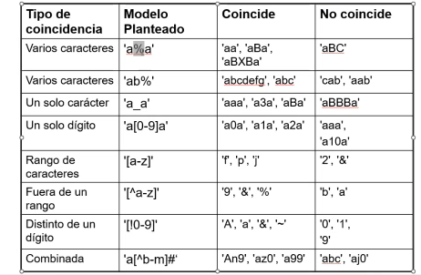 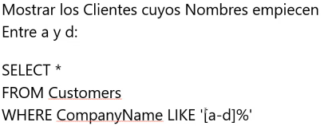Funciones de agregado
Count(campo)Cuenta registros con contenido no nulo
Sum: Suma contenido de campos numéricos
Max: Obtiene el máximo valor de campos numéricos
Min:Obtienen el mínimo valor de campos numéricos
Avg:Obtiene el promedio de los valores de campos numéricos.
Group by:La función devuelve cantidad de registros, si queremos averiguar la cantidad de un grupo.
Having:Aplicar filtrado a funciones de agregado
Tipos de relaciones
Inner Join
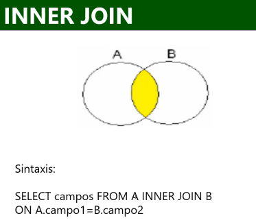Outer joins: Left Outer Join y Right Outer Join.
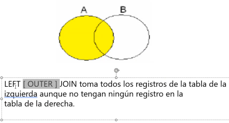 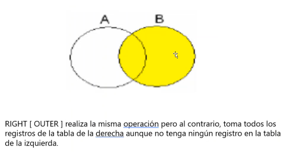Self Join: Se llama a si misma.
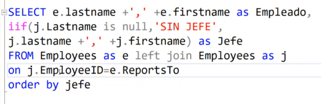Cross Joins: Es para una consulta de N por N
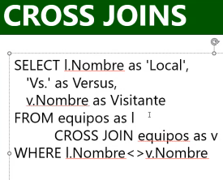Operador Union: Unión entre dos consultas, deben tener la misma cantidad de campos y ser del mismo tipo.
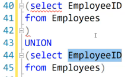Distinct Para eliminar los repetidos en una consulta
Top:
Backup y Restore:
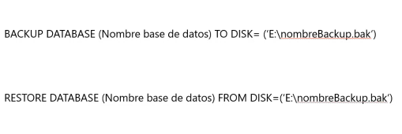Insert, Update y Delete
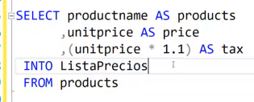La instrucción INTO me permite crear una tabla a partir de una consulta.
Default:
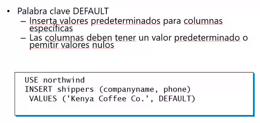La instrucción DELETE quita una o más filas en una tabla a menos que utilice una cláusula WHERE.
Cada fila eliminada se alamcena en el registro de transacciones.
La instrucción TRUNCATE TABLE elimina todas las filas de una tabla.
SQL Server conserva la estructura de la tabla y los objetos asociados.
Ambas se pueden deshacer con un ROLLBACK. TRUNCATE reinicará el contador para una tabla que contenga una columna IDENTITY. DELETE mantendrá el contador de la tabla para una columna IDENTITY. TRUNCATE es un comando DDL mientras que DELETE es un DML.
CASE: Es una expresión especial de T-SQL que permite mostrar un valor alternativo dependiendo del valor de una columna o variable.

Cardinalidad:
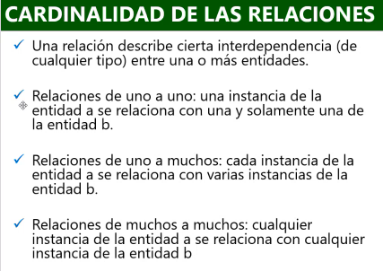Restricciones de las tablas:
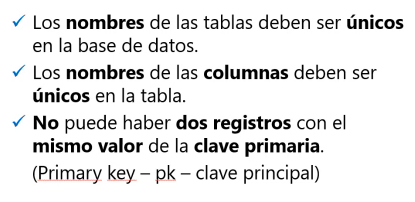